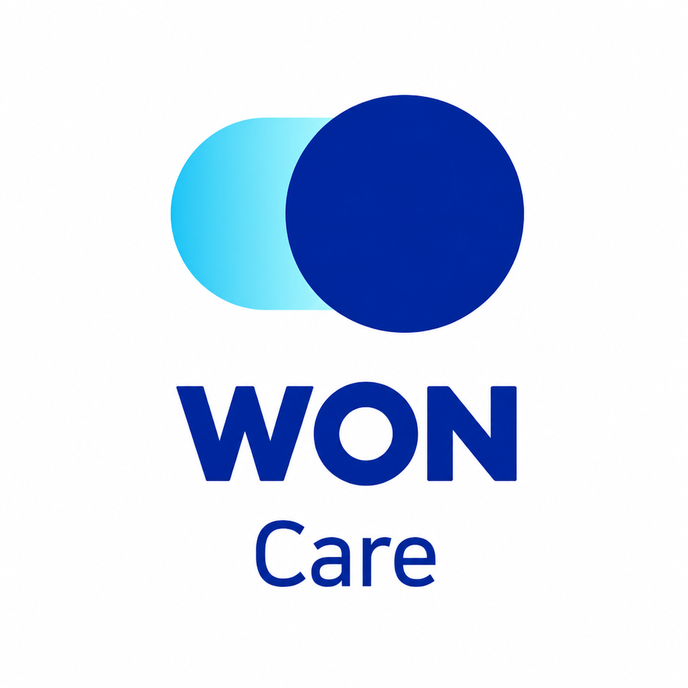
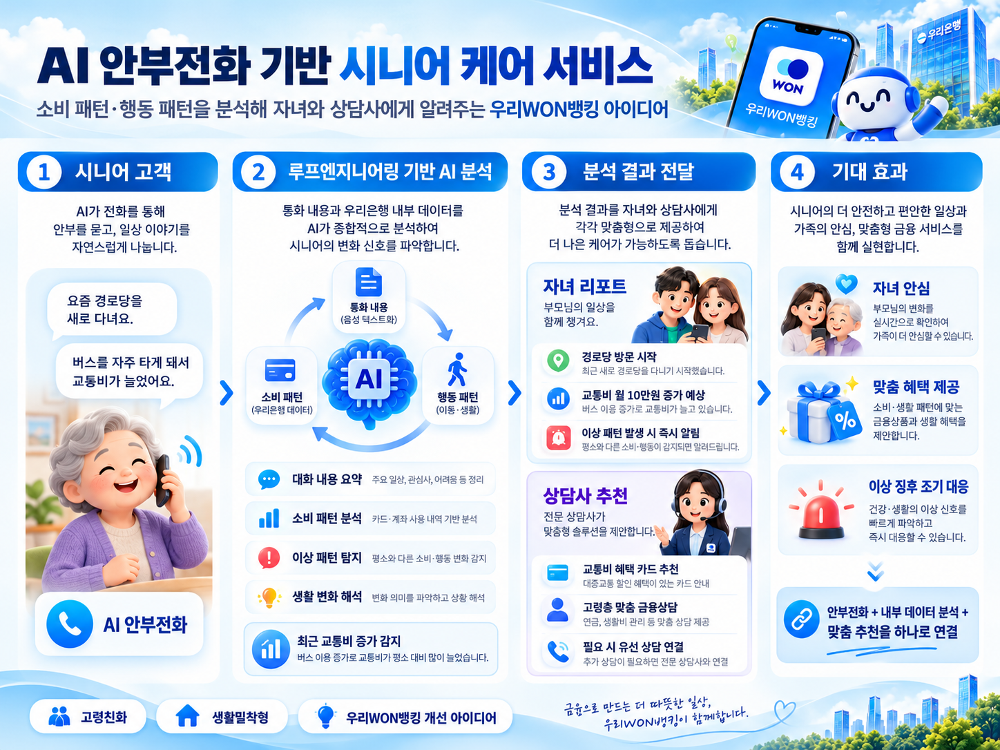
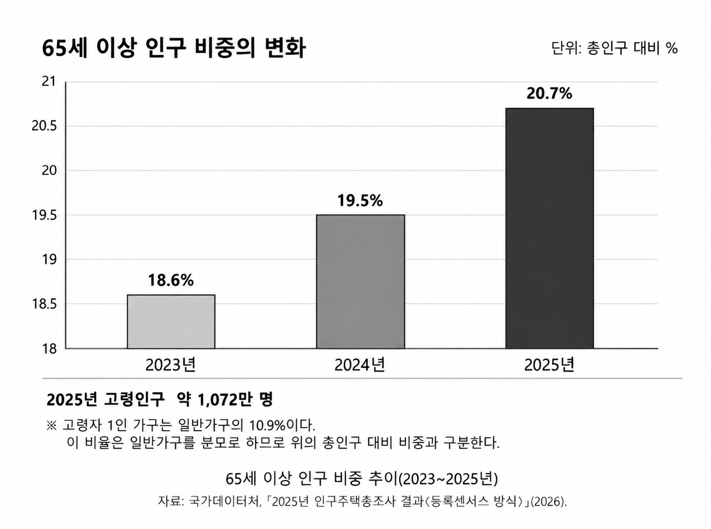
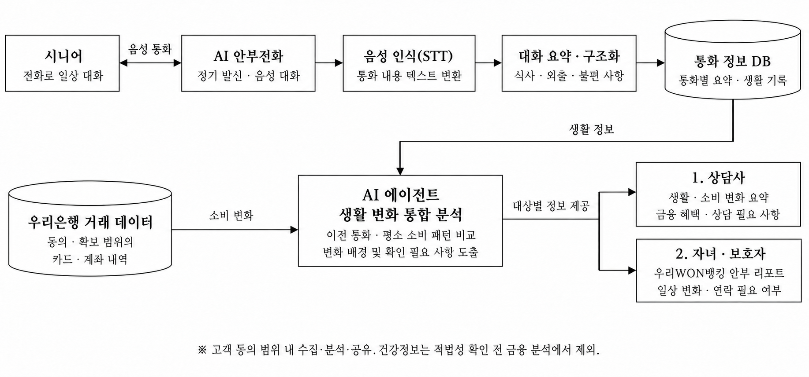

우리WON케어
시니어 AI 안부전화 서비스
- 소속
- SSAFY 서울 14반
- 팀원
- 강현준, 김원석, 정지혁
기획 취지
고령 고객의 금융 안전성과 일상생활의 편의성을 높이고, 가족의 돌봄 부담을 줄이는 것을 목표로
함.
우리WON뱅킹을 금융거래뿐 아니라 고령 고객의 일상까지 함께하는 생활 밀착형 금융 플랫폼으로
확장하고자 함.
이를 위해 AI 안부전화와 금융·생활 데이터 분석을 결합해 고령 고객의 일상과 금융활동 변화를
조기에 감지함.
분석 결과를 가족과 전문 상담사에게 전달하는 선제적 시니어 케어 서비스를 기획함.

1 추진 배경과 필요성
돌봄 수요와 운영 성과
2025년 인구주택총조사 기준, 65세 이상 인구는 전체의 20.7%(약 1,072만 명)이며 고령자 1인 가구는 일반가구의 10.9%임.[1]
경기도사회서비스원의 ‘AI 노인말벗서비스’는 2025년 어르신 7,468명에게 제공됐으며 위기징후 발굴과 복지서비스 연계 성과를 인정받아 경기도 결산검사 우수사례로 선정됨.[2]
AI 노인 안부전화서비스는 사용자 수가 124% 증가하고 제공 건수는 171% 늘었으며
당일 안부확인률은 97.6%, 최종 안부 확인률은 99.9%임.
누적 사용자는 1만 명에 육박함.[2]
익숙한 전화로 일상 변화를 살펴 가족의 안부 확인을 보완함.

2 문제 정의
간헐적 확인의 한계
통화나 방문한 시점만으로는 그 사이 외출 감소, 식사 여부, 생활상 어려움을 파악하기
어려움.
자녀가 계속 확인하려 해도 시간과 거리의 제약이 있음.
소비 기록의 해석 한계
교통비가 늘거나 거래 횟수가 줄었다는 사실만으로 위험 여부를 판단하기 어려움.
자연스러운 활동 변화인지 추가 확인이 필요한지 살피려면 통화 내용과 소비 기록을 함께
봐야 함.
후속 확인과 상담 연결
자녀에게 달라진 일상과 확인 사항을 전달하고 상담사에게 생활비 부담과 금융 이용의 어려움을 알려 연락 또는 금융상담으로 이어야 함.
3 주요 기능
| 기능 | 제공 내용 | 운영 기준 |
|---|---|---|
| AI 안부전화·요약 | 설정 시간에 정기 통화. 식사·외출·관심사 대화와 주요 내용·불편 요약 | 이전 통화와 비교 가능하도록 기록 |
| AI 에이전트 생활 변화 분석 |
통화 내용과 카드·계좌 거래를 함께 분석해 평소와 달라진 점과 확인 사항 정리 | 교통비 변화, 경로당 방문 대화 등을 살펴 배경 확인 |
| 변화 감지·알림 | 평소와 다른 외출 언급, 소비 변화 등 확인 신호 전달 | 단일 지출로 위험 단정 금지, 지속 여부와 대화 맥락 확인 |
| 가족 안부 리포트 | 우리WON뱅킹에 주요 대화·생활 변화·확인 사항 제공 | 공유 동의 항목만 요약 제공, 거래 내역 전체 공개 지양 |
| 금융상담 연결 | 생활비 부담과 금융 이용 어려움에 맞춘 혜택·상담 | 연금·생활비 관리 안내 및 필요 시 전화상담 |
4 시스템 구성과 처리 흐름
통화 내용을 구조화한 뒤 AI 에이전트가 동의 범위 내 금융거래 데이터와 함께 생활 변화를 분석함.
상담사와 보호자에게는 대상별로 필요한 정보를 제공함.

대화 구조화
STT·TTS와 LLM을 활용해 식사·외출·불편 사항을 추출하고 JSON 형식으로
검증해 저장함.
확인되지 않은 정보는 ‘미확인’으로 처리함.
AI 에이전트 통합 분석
통화 요약과 실제 확보해 적법하게 이용할 수 있는 거래를 함께 살펴 개인의 평소 패턴과
비교함.
변화 배경과 확인 필요 사항을 정리하되 단일 발화나 거래만으로 위험을 확정하지 않음.
정보 제공
상담사에게는 생활·소비 변화와 상담 필요 항목을, 보호자에게는 동의한 안부 요약을
제공함.
계좌번호·잔액·통화 원문은 기본 제공에서 제외함.
5 타당성 검토 요약
| 검토 영역 | 판단 | 사업화에 필요한 조건 |
|---|---|---|
| 5-1. 기술적 타당성 | 상용 기술로 구현 가능 | 고령층 사투리·느린 응답의 음성 인식과 오탐 검증, 은행 보안심사 |
| 5-2. 경제적 타당성 | 실증 후 수익성 판단 | 통화·상담 원가, 업무시간 절감, 비용 부담자 확인 |
| 5-3. 시장 타당성 | 수요 기반 확인 | 기존 돌봄 대비 차별성 및 지속 이용 검증 |
| 5-4. 법적 타당성 | 사전 심사를 전제로 추진 | 건강·금융정보 이용과 가족 제공 요건 확보 |
5-1 기술적 타당성
상용화 근거와 안전 설계 |
네이버클라우드는 한국어 실시간 음성인식·음성합성 API를 제공하고 전화
플랫폼은 양방향 음성 연결 기능을 지원함. |
|---|---|
AI 에이전트의 분석 방식 |
AI 에이전트가 필요한 통화 기록과 거래 조회·분석 도구를 선택해 생활
변화를 살피도록 설계함. |
추진 조건 |
고령층의 사투리와 느린 응답에서 발생하는 인식 오류와 응답 지연을
검증하고 은행 보안심사를 거침. |
AI 에이전트 운영과 시범 운영 검증 |
AI 에이전트의 도구 실행 권한을 조회·분석·요약으로 제한하고 사용한
자료와 처리 결과를 기록함.
예약 발신과 재시도를 자동화하고 미응답이나 도움이 필요하다는 표현은
정해진 절차에 따라 담당자에게 전달함. |
5-2 경제적 타당성 · 비용 검토 가정
| 항목 | 산식·가정 | 금액 (1인·월) |
|---|---|---|
| 전화·AI | 8회 × 4분 × 200원/분 | 6,400원 |
| 후속 상담 | 8회 × 10% × 8분 × 400원/분 | 2,560원 |
| 알림·저장 | 월 정액 가정 | 1,000원 |
| 변동비 합계 | 전화·AI + 상담 + 알림·저장 | 9,960원 |
| 월 매출액(가정) | 유료 가입자 1인당 | 14,900원 |
| 기여이익 | 월 매출액 − 변동비 | 4,940원 |
| 상담 전환 20% | 상담비 5,120원 · 변동비 12,520원 | 기여이익 2,380원 |
시범 운영에서 실제 원가·상담시간·오탐·지속 이용·지불의사·직원 업무시간을 확인.
유료형 손익분기 고객 수는 월 고정비 ÷ 1인당 기여이익으로 계산함.
은행 무료형은 예산 대비 고객 유지 효과로 판단.
5-3 시장 타당성
수요와 초기 고객
2025년 등록센서스 기준 65세 이상 인구는 20.7%이며 고령 1인 가구는 일반가구의
10.9%임.[1]
고령인구 전체를 유료 고객으로 보지 않고 우리은행 시니어 고객 중 혼자 살거나 자녀와 떨어져
지내는 고객을 우선 검토함.
시장 규모는 동의 가능한 대상 고객 수에 가입률과 유지율을 적용해 추정함.
운영 사례와 차별화
네이버는 2026년 3월 케어콜을 국내 약 150개 기관, 약 5만 명에게 제공한다고
발표함.[7]
전화 돌봄 운영 사례를 참고하되 금융생활 변화 맥락과 상담 연결의 추가 효용을 실증함.
은행 접점과 지불 구조
영업점과 우리WON뱅킹을 신청·설명·가족 리포트 접점으로 활용함.
부모의 참여 동의, 가족·은행·기관 중 비용 부담자, 실제 연동 범위와 담당자 업무량을
함께 확인하고 상품 권유로 느껴지지 않도록 설계함.
5-4 법적 타당성 및 보호 원칙
동의와 가족 공유
개인정보는 목적과 제공 대상별로 법적 근거를 확보함. 성인 자녀도 원칙적으로 제3자이므로 부모가 공유 범위를 정하고 금융거래 내용은 금융실명법상 서면 요구·동의 등 요건을 확인함.[8][9]
건강정보 결합
신용정보법 제33조 제2항은 질병·상해 정보 이용을 동의 외에도 법정 허용
목적에 해당하는 경우로 제한함.
건강 대화와 금융정보를 직접 결합하는 일은 포괄 동의만으로 추진하지 않고 사전
법무 심사를 거침.[5]
허용 목적을 확인하기 전에는 금융 분석에 결합하지 않으며 수집·보관·삭제·전달
기준을 마련함.
운영·보안 및 AI 고지
AI 통화임을 알리고 접근권한·보존기간·위탁·국외이전 요건을 관리함.
의료진단이나 24시간 안전 확인을 보장한다고 안내하지 않음.[8][10][11]
AI 업체가 서비스 제공 외 목적으로 데이터를 학습에 재사용하지 않도록
원칙적으로 제한하고 계약·설정으로 권한과 보관기간을 관리함.
상품 안내와 업무 범위
돌봄 정보를 상품 판매에 활용할 때는 목적과 판매 규제를 별도로 확인함.
금융상품 안내는 선택 기능으로 운영하며 은행의 유료 돌봄 제공이 부수업무에
해당하는지도 검토함.[12][13]
최소 제공과 철회
가족 기본 리포트는 동의한 생활 변화와 연락 필요 여부로 제한하고
계좌번호·잔액·통화 원문은 기본 공개에서 제외함.
공유 대상 변경·철회 기능을 제공함.
금융·건강 요약도 내용별 적법성을 확인함.[5][8][9]
6 서비스 제공 흐름
참여·동의
일상 대화
생활·소비 변화 분석
상담사 확인
시니어
앱 조작 없이 설정된 일정에 걸려오는 AI 안부전화에 응답하고 일상 대화로 필요한 지원을 이야기함.
자녀·보호자
공유에 동의한 주요 안부와 최근 변화, 연락 필요 사항을 우리WON뱅킹 리포트에서 확인함.
담당 상담사
AI 에이전트가 정리한 생활·소비 변화의 근거와 금융 이용 불편을 확인하고 혜택, 연금·생활비 관리 상담 또는 전화 후속 확인을 제공함.
은행 운영
미응답·도움 요청·이상 신호를 담당 절차에 따라 확인하고 통화·알림·후속 조치 이력을 관리함.
7 실증 지표와 기대 효과
| 실증 점검 지표 | 기대 효과 |
|---|---|
|
통화 완료율, STT 인식 오류율, LLM 추출 정확도 요약 사실 일치 여부, 에이전트 도구 실행 성공률 |
전화 참여 부담을 낮추고 시니어가 일상 속 불편을 이야기할 기회 제공 |
|
분석 근거의 일치 여부, 이상 신호 오탐률 알림 후 담당자 확인 시간, 후속 조치 기록 |
가족의 안부 확인을 보완하고 생활 변화 확인·지원 연결 시간을 단축 |
|
상담 전환, 실제 상담 시간·원가 지속 이용·지불 의사, 직원 업무시간 |
생활에 맞는 금융상담과 혜택 안내, 우리은행 고객 접점·신뢰 형성 |
상담사는 표본 통화와 분석 결과를 대조하고 시범 운영 결과에 따라 대화 흐름·분석 기준을 개선함.
서비스는 의료진단이나 24시간 안전 확인을 대체하지 않음.
8 참고자료
- [1]2025 등록센서스(2026.7.28.)
- [2]경기도 AI 노인말벗서비스(2026.7.26.)
- [3]음성인식·음성합성
- [4]전화 연동
- [5]신용정보법·시행령·제공 동의
- [6]금융 AI 가이드라인
- [7]케어콜 사례
- [8]개인정보 보호법
- [9]금융실명법
- [10]AI 기본법 제31조·제34조
- [11]의료법
- [12]금융상품 판매원칙
- [13]은행 부수업무